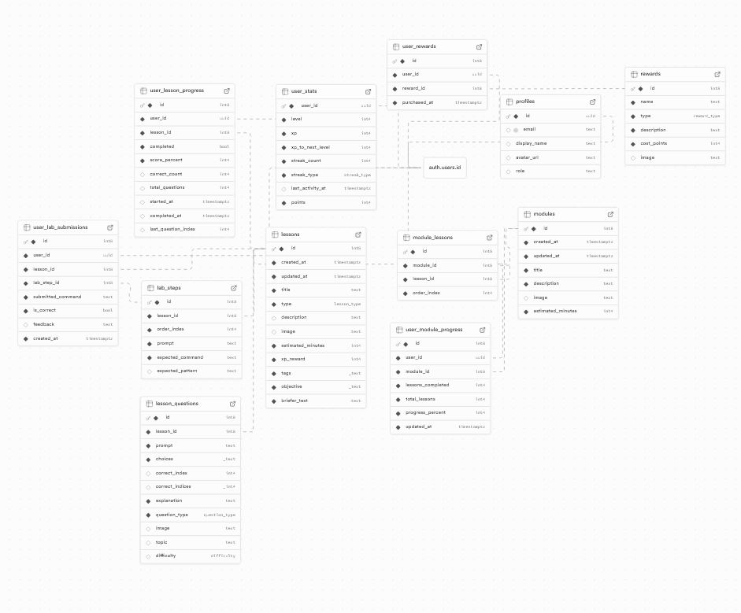

This showcases my final database schema for my project. The core educational content mainy lives in the modules, lessons, and any associative tables like module_lessons. User progress is tracked in user_module_progress and user_lesson_progress, and any information related to gamification features like level, XP, and points is centralized in user_stats and user_rewards.
